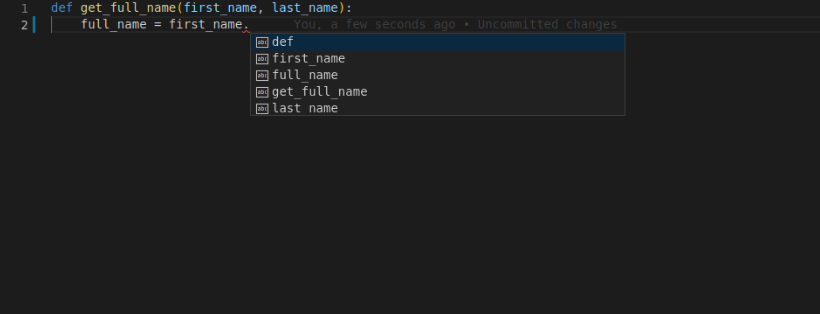
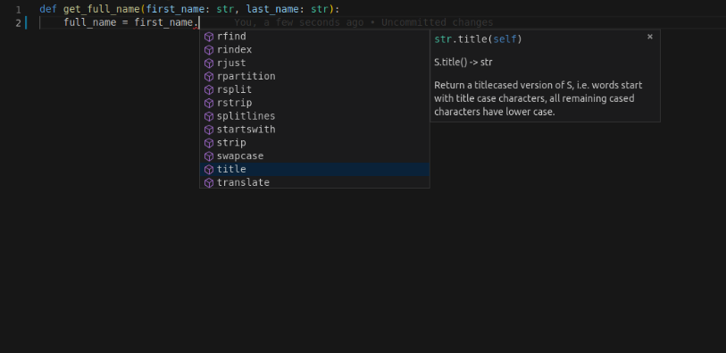
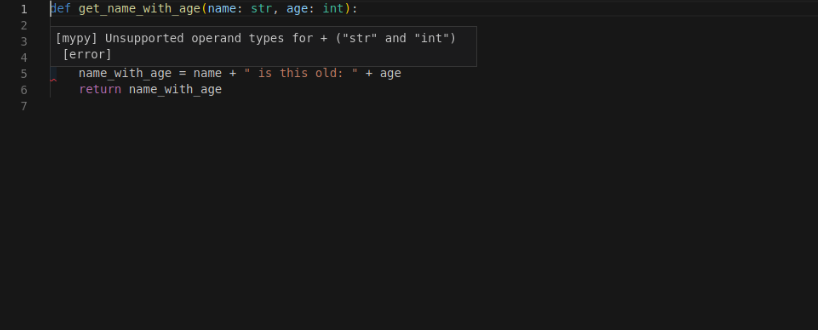
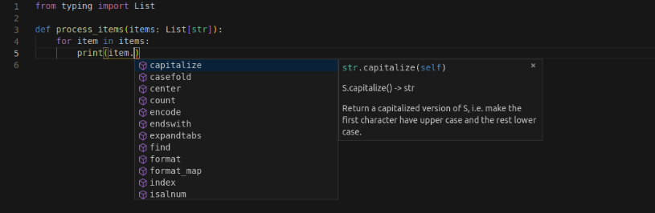
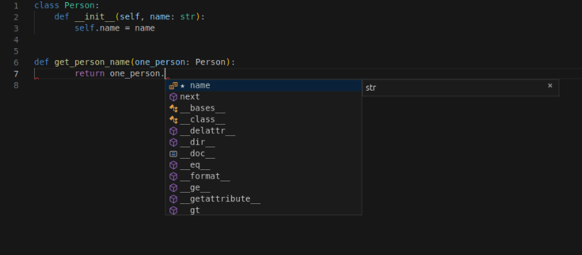

本书作者：测试开发刚哥，文章版权归个人所有，未经授权请勿转载。
typing 是 Python 标准库，用来做类型提示。FastAPI 使用 typing 做了：
-
编辑器支持；
-
类型检查；
-
定义类型，request path parameters, query parameters, headers, bodies, dependencies 等等；
-
类型转换；
-
数据验证，并且在验证失败时自动生成错误；
-
OpenAPI 文档，自动生成接口参数；
编辑器支持 typing
先看个简单的例子：
def get_full_name(first_name, last_name):
full_name = first_name.title() + " " + last_name.title()
return full_name
print(get_full_name("john", "doe"))
输出：
John Doe
也就是把首字母转换成大写后，用空格拼接起来。
假如在写程序时，你并不知道这个转换大写的函数名是title，那么你会输入.之后查看：

结果根据没有提示。
添加 typing 类型提示：
def get_full_name(first_name: str, last_name: str):
full_name = first_name.title() + " " + last_name.title()
return full_name
print(get_full_name("john", "doe"))
再试一把：

有了。
再比如：
def get_name_with_age(name: str, age: int):
name_with_age = name + " is this old: " + age
return name_with_age

因为明确了类型，编辑器会做类型检查。
声明类型
简单类型：
intfloatboolbytes
def get_items(item_a: str, item_b: int, item_c: float, item_d: bool, item_e: bytes):
return item_a, item_b, item_c, item_d, item_d, item_e
List
Python 不同版本对 typing 的支持是不一样的，3.6 以上版本：
from typing import List
def process_items(items: List[str]):
for item in items:
print(item)
而 3.9 以上版本：
def process_items(items: list[str]):
for item in items:
print(item)
不需要 import typing，小写的 list 就行，跟常规用法一致。
这样编辑器就能提供支持：

Tuple 和 Set
3.9 以上版本：
def process_items(items_t: tuple[int, int, str], items_s: set[bytes]):
return items_t, items_s
Dict
3.9 以上版本：
def process_items(prices: dict[str, float]):
for item_name, item_price in prices.items():
print(item_name)
print(item_price)
Union
多种类型，比如 int 或 str。
3.6 以上版本：
from typing import Union
def process_item(item: Union[int, str]):
print(item)
3.10 以上版本：
def process_item(item: int | str):
print(item)
不需要 import，使用|就可以了。
None
可能为 None。
3.6 以上版本：
from typing import Optional
def say_hi(name: Optional[str] = None):
if name is not None:
print(f"Hey {name}!")
else:
print("Hello World")
from typing import Union
def say_hi(name: Union[str, None] = None):
if name is not None:
print(f"Hey {name}!")
else:
print("Hello World")
3.10 以上版本：
def say_hi(name: str | None = None):
if name is not None:
print(f"Hey {name}!")
else:
print("Hello World")
Classes
把某个类作为类型提示：
class Person:
def __init__(self, name: str):
self.name = name
def get_person_name(one_person: Person):
return one_person.name
也能得到编辑器支持：

Pydantic 模型
Pydantic 模型有点类似于 Java 的 POJO，就是定义一个类，里面有一堆属性，这些属性都有类型。在实例化的时候，会做类型检查或类型转换。
from datetime import datetime
from pydantic import BaseModel
class User(BaseModel):
id: int
name = "John Doe"
signup_ts: datetime | None = None
friends: list[int] = []
external_data = {
"id": "123",
"signup_ts": "2017-06-01 12:22",
"friends": [1, "2", b"3"],
}
user = User(**external_data)
print(user)
## > User id=123 name='John Doe' signup_ts=datetime.datetime(2017, 6, 1, 12, 22) friends=[1, 2, 3]
print(user.id)
## > 123
注意，类型提示使用的是:，初始化赋值使用的是=。
Pydantic 对于可选类型有个特殊语法...，表示可以为 None，但是必填：
from pydantic import BaseModel, Field, ValidationError
class Model(BaseModel):
a: int | None
b: int | None = ...
c: int | None = Field(...)
print(Model(b=1, c=2))
#> a=None b=1 c=2
try:
Model(a=1, b=2)
except ValidationError as e:
print(e)
"""
1 validation error for Model
c
field required (type=value_error.missing)
"""
-
a、b、c 都能接受 None，比如
Model(a=None, b=None, c=None)； -
a 可选，比如
Model(b=1, c=2)是 ok 的； -
b 和 c 都是必填，比如
Model(a=1, b=2)会报错；
Python 版本
从示例代码来看，Python3.10 版本提供了更简洁的语法，能让代码看起来更优雅。而且 Python3.10 版本也引入了 switch 语句，如果没有什么历史原因，推荐大家使用 Python3.10 版本。
参考资料：
Python Types Intro - FastAPI https://fastapi.tiangolo.com/python-types/